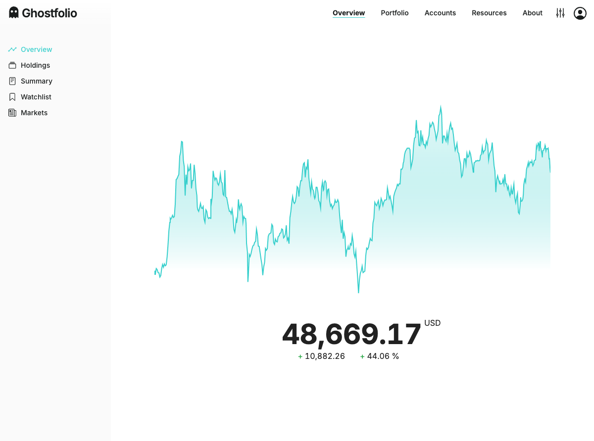
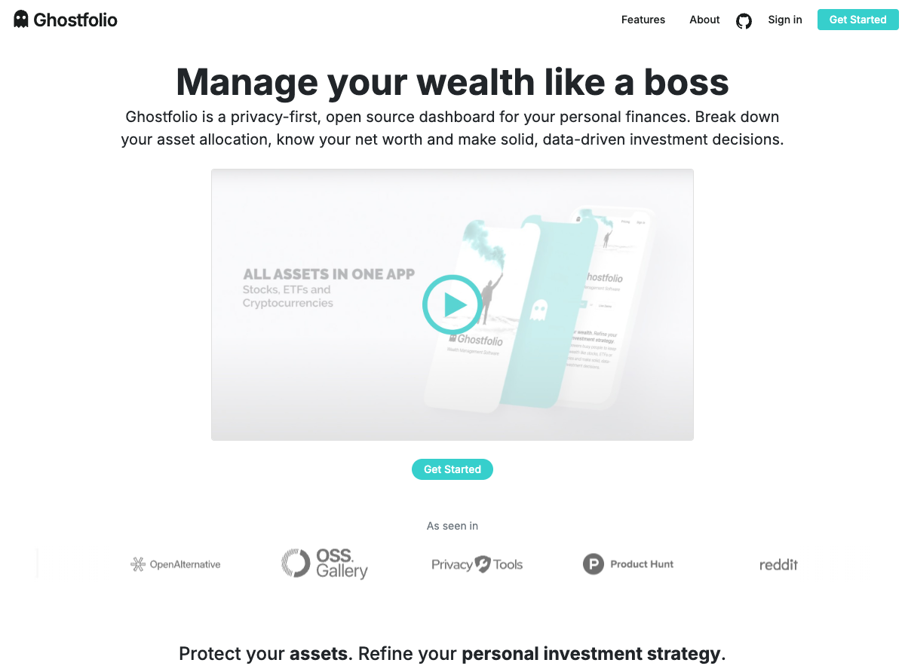
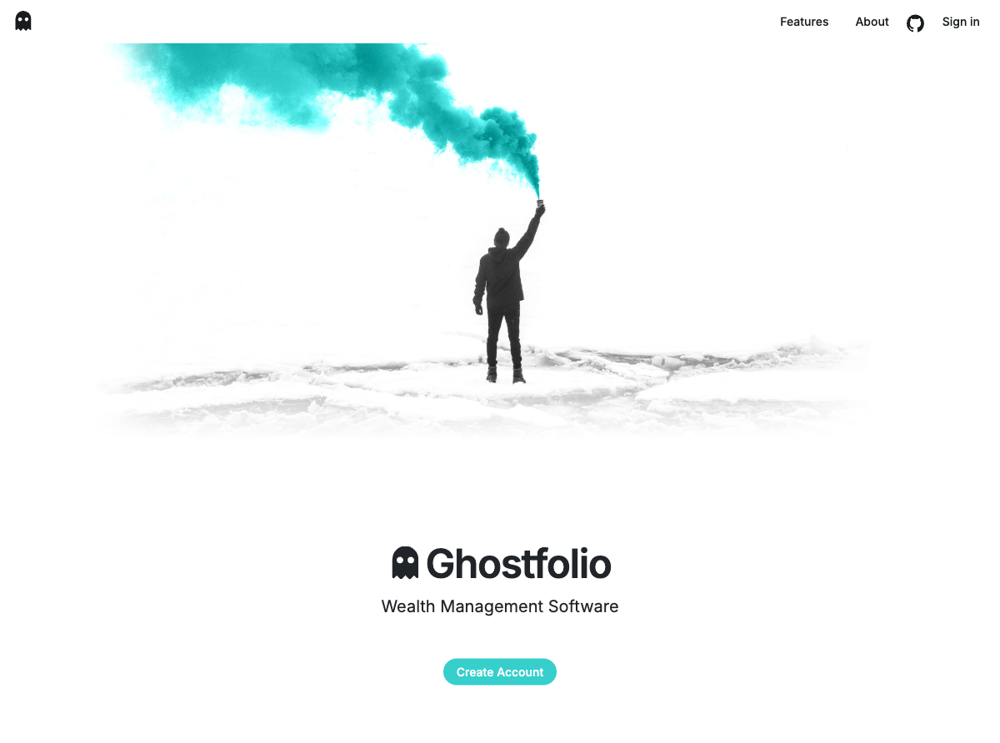
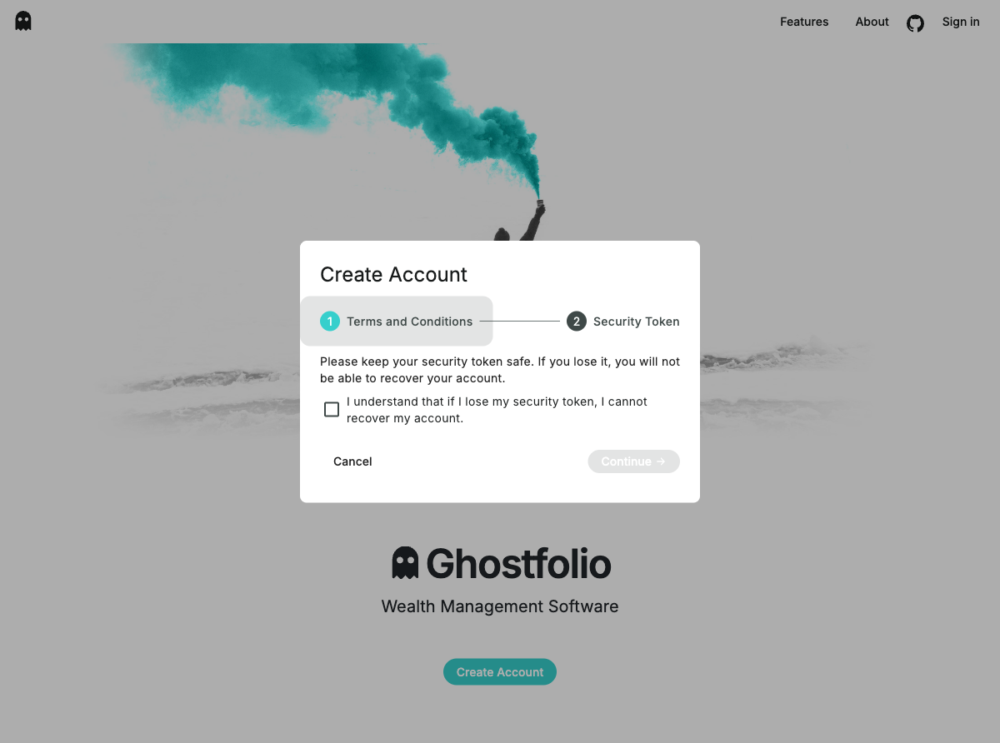
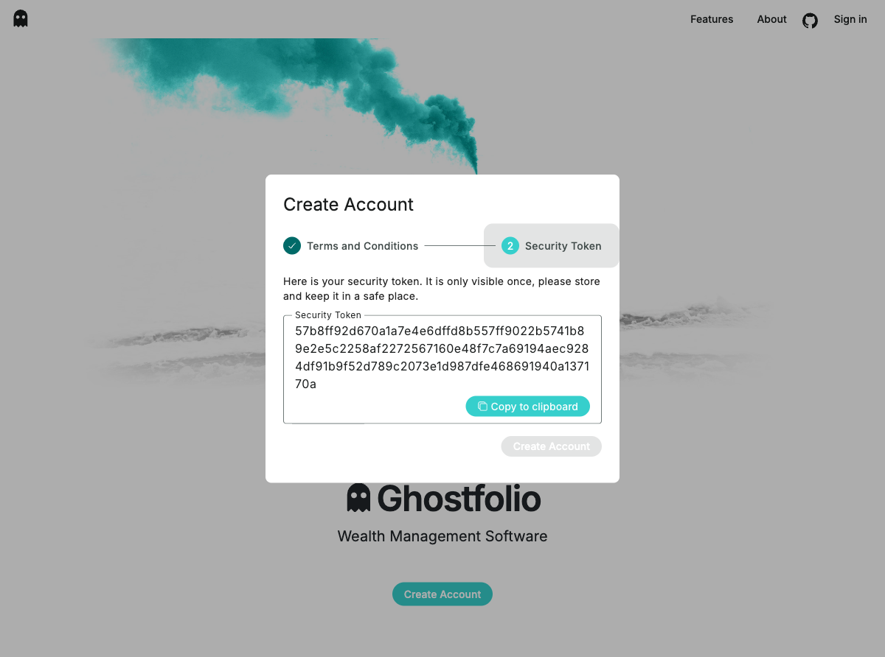
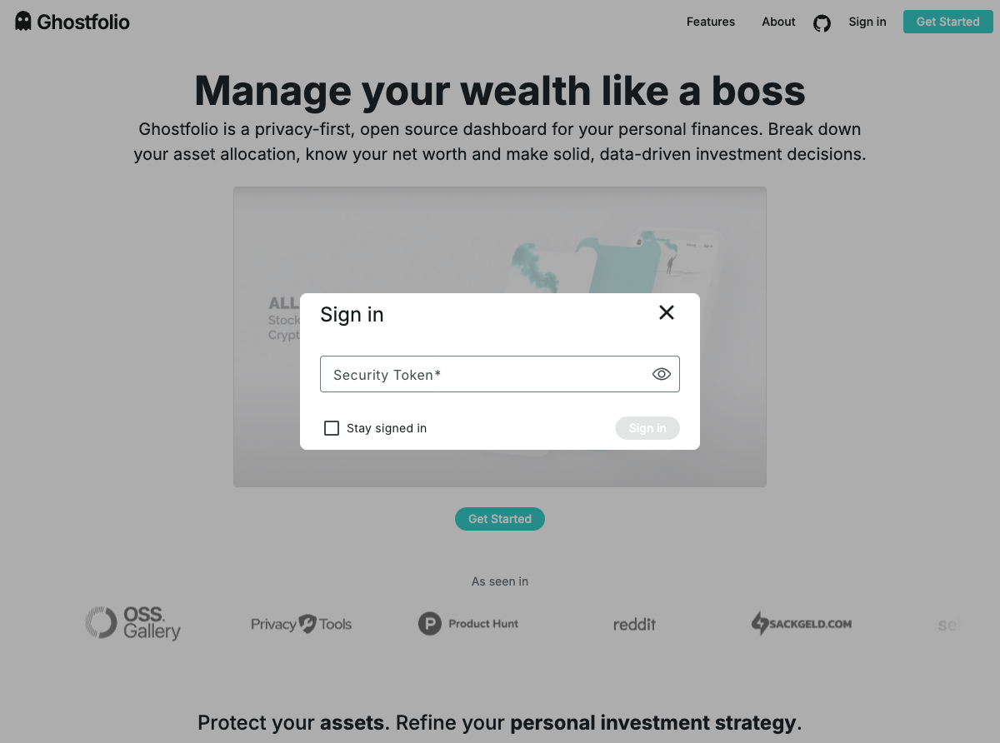
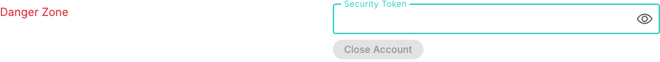

Install, run, and understand Ghostfolio locally — and get your security token to load demo data.
Ghostfolio is an open-source wealth management and portfolio tracking application. It lets you record investment transactions (stocks, ETFs, crypto), pull live market data, and visualise portfolio performance over time — all self-hosted, all privacy-first.
In this workshop, Ghostfolio is the product you will extend with AI-assisted features using OpenCode/OpenAgents. Think of it like a personal Morningstar — it tracks your trades, shows you charts, and exposes a REST API you can call from AI agents. You do not need to be a Ghostfolio expert; you need to know how to run it, create a user, and call its API.

3333ADMIN roleEverything runs as three Docker containers, all wired together via Docker Compose.
The workshop uses docker/docker-compose.build.yml which builds the image from local source instead of pulling the official Docker Hub image. This means any code change you make can be rebuilt and tested immediately. The local build is slower on the first run (5–15 minutes) but reuses Docker layer cache after that.
On your Mac or Linux machine you need these tools installed and running before starting:
git --version to verify..sh scripts use standard POSIX bash. Already present on all Macs.node --version to verify.Docker Desktop must be running before you execute any script. If Docker is installed but not started you will see: ERROR: Docker is installed, but the Docker daemon is not running. — open Docker Desktop and wait for the whale icon to stop animating.
One command does everything: creates .env, fills in secrets, builds the Docker image from source, and starts all three services.
Run this from the root of the repo:
./scripts/start.sh
The first run takes 5–15 minutes while Docker downloads base layers and builds the NestJS + Angular bundle. You will see Nx compile output scrolling by — this is normal.
.env.example → .env and fills in generated secrets for Redis, Postgres, and JWTdocker compose ... build from docker/docker-compose.build.ymldocker compose ... up -d (detached, all three containers)prisma migrate deploy then starts NodeWhen the script finishes, verify all containers are healthy:
./scripts/check.sh
Then open your browser at:

If port 3333 is taken, change PORT=3333 in .env and update the port mapping in docker/docker-compose.build.yml before starting.
Ghostfolio has no pre-created accounts. The first person to register becomes the administrator. Do this immediately after the app starts to lock in your admin role before anyone else.



This app has no traditional username/password — Ghostfolio gives you a short security token instead. Treat it like a password and don't share it. You will use it in the next step to authenticate API calls. If you reset the database your token is gone and you will need to register again, so save it somewhere safe.
The security token is a short, opaque string Ghostfolio generates when you create an account. It is the key that identifies your user — there are no passwords in this build.
The security token is your durable identity (stored in the database, never expires). The JWT is a short-lived bearer token generated from the security token — it's what the API checks on every request. The seed scripts handle this exchange automatically; you only ever need to copy the security token.
/account)

Alternatively you can retrieve the token via the API directly (useful for automation):
# Exchange your security token for a JWT (replace TOKEN with your actual token)
curl -s -X POST http://localhost:3333/api/v1/auth/anonymous \
-H "Content-Type: application/json" \
-d '{"accessToken": "TOKEN"}' | python3 -m json.tool
The response looks like:
{
"authToken": "eyJhbGciOiJIUzI1NiIsInR5cCI6IkpXVCJ9..."
}
The authToken value is the short-lived JWT — you would pass it as Authorization: Bearer <authToken>. The seed scripts handle this exchange for you automatically.
The seed scripts accept the security token (GHOSTFOLIO_ACCESS_TOKEN), not the JWT. Don't copy the JWT value — it expires. Always copy the security token from the UI settings page.
Once the app is running and you have your security token, you can seed the workshop portfolio with realistic demo transactions across three accounts.
myinvestor-core-etf.csv — Index ETF portfolio (EUR)trade-republic-growth.csv — Growth stock portfolio (EUR)crypto-exchange.csv — BTC & ETH positions (USD)Run the seed script. It will prompt you for the security token:
./scripts/seed-workshop-data.sh
Or pass the token as an environment variable to skip the prompt (useful for re-runs or CI):
GHOSTFOLIO_ACCESS_TOKEN="your-security-token-here" ./scripts/seed-workshop-data.sh
The script is idempotent — running it twice will not create duplicate activities. Each imported activity is tagged with WORKSHOP_DEMO_DATA in its comment field, and the script checks for that tag before inserting.
To remove only the demo data (without touching your account or other data):
./scripts/reset-workshop-data.sh
Solutions to the most common issues you might run into.
Symptom: ERROR: Docker is installed, but the Docker daemon is not running.
Fix: Open Docker Desktop and wait for the whale icon to stop animating (≈ 30 seconds), then run ./scripts/start.sh again.
Symptom: Browser shows "connection refused" or the start script errors on port binding.
Fix: Find and stop the process using the port: lsof -i :3333. Or change PORT=3333 in .env.
Symptom: ./scripts/check.sh shows the ghostfolio container in a restart loop.
Fix: Check logs for the root cause:
./scripts/logs.sh
Most common cause: Postgres or Redis not yet healthy when ghostfolio started. Wait 30 seconds and check again — Docker healthchecks will restart in order.
Symptom: ERROR: .env still contains placeholders.
Fix: Search for remaining placeholders and fix them:
grep '<INSERT_' .env
Delete .env and run ./scripts/start.sh again to regenerate it cleanly.
Symptom: Could not authenticate with the provided security token (401).
Fix: Make sure you are copying the Security Token from Account → Security in the UI — not the JWT authToken. The security token looks like a short alphanumeric string, not a long JWT starting with eyJ….
Symptom: The build takes 10–20 minutes on a clean machine.
This is normal. The first run installs npm dependencies, generates Prisma, and builds the full NestJS + Angular bundle inside Docker. Subsequent starts reuse Docker layer cache and take under a minute. ./scripts/rebuild.sh forces a --no-cache rebuild — only use it when you've changed code.
Destroys all containers, networks, and volumes (including the database). Use only if everything is broken:
./scripts/reset.sh
Then start fresh with ./scripts/start.sh.
Once Ghostfolio is running and the demo data is loaded, continue with Workshop 101 to understand the OpenCode workflow, whiteboard cards, and safety checklist.